Shibatacho
Shibatacho · Miyagi
Shibatacho
Highlighted on the Miyagi map.
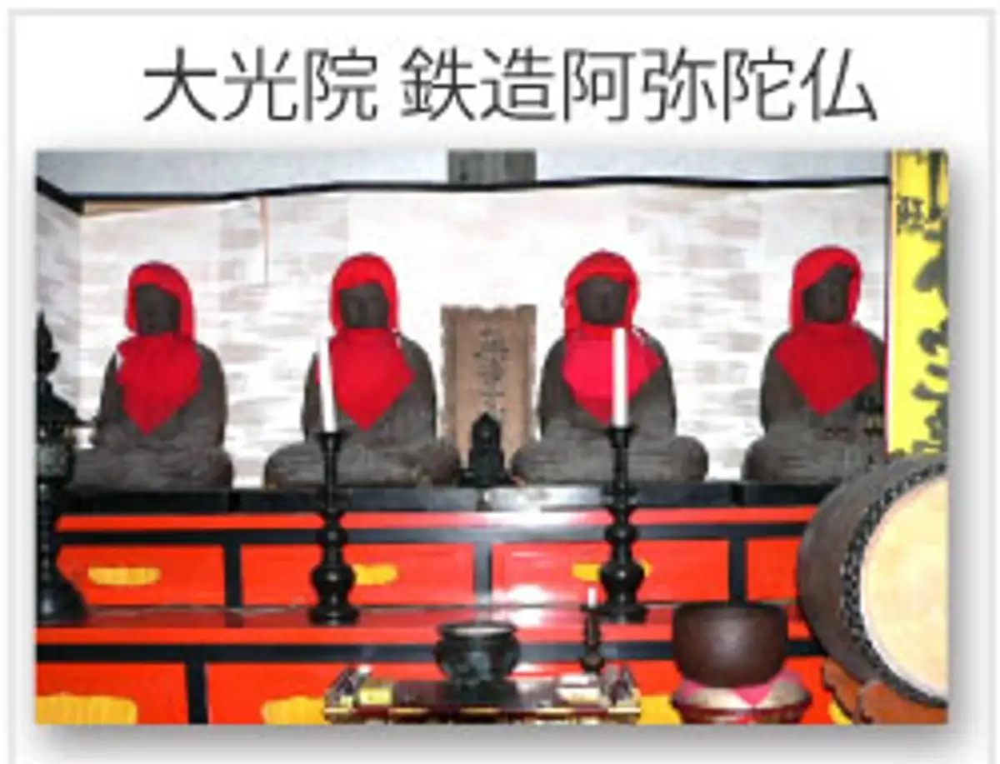
Stay
古民家宿 柚子のあぜ道雨乞のかえる
Ko Minka Yado Yuzu Noaze Michi Amagoi Nokaeru
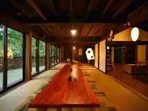
Dining
麺 ゆるり
Men Yururi
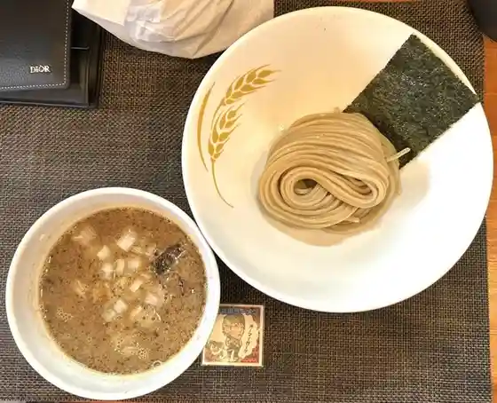
花いかだ
Hana Ikada
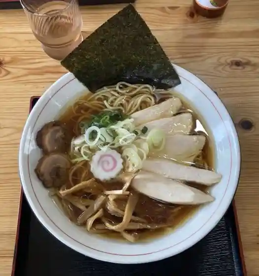
めん屋 みの家
Men Ya Mino Ie
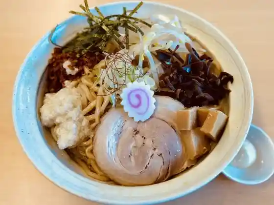
麺組みなみ
Men Kumi Nami
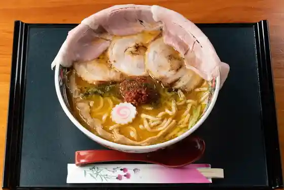
らぁめん ソメイヨシ乃
Raamen Someiyoshi No
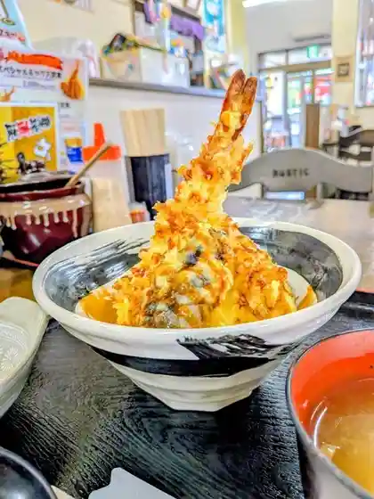
とんかつ夕やけ
Tonkatsu Yuu Yake
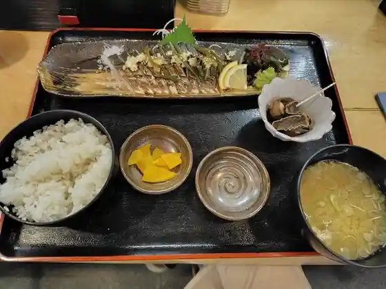
はたはた
Hatahata
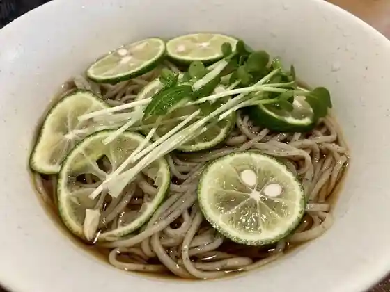
そば日和
Soba Hiyori
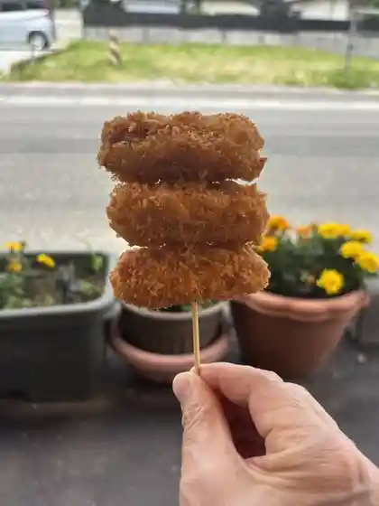
郷家精肉店
Gouke Seinikuten
noodle shop yatsuboshi
noodle shop yatsuboshi
手打ち蕎麦 いとう
Teuchi Chi Soba Itou
江戸廣寿司
Edo Kou Sushi
マーブルマーブル
Maaburumaaburu
リトル・ハウス
リトル・ハウス
フリゴレス
Furigoresu
ibis cafe 船岡
ibis cafe
こうのとり茶寮
Kounotori Charyou
ホルモン 炎
Horumon Honoo
ちどり麺
Chidori Men
蕎麦処 むらかみ
Sobadokoro Murakami
CAFE橙
CAFE
むすび亭 おとわ
Musubi Tei Otowa
お食事処桜
O Shokuji Tokoro Sakura
ラ・ルチア
ラ・ルチア
中国家庭料理城香亭
Chuugoku Kateiryouri Shiro Kaori Tei
まんぷく食堂
Manpuku Shokudo
蓑寿司
Mino Sushi
仙台屋菓子本舗
Sendai Ya Kashi Honpo
焼肉重慶
Yakiniku Juukei
ナルミ・キッチン
ナルミ・キッチン
ibis cafe 槻木
ibis cafe
ごはんと菓とさくらkitchen
Gohanto Ka Tosakura Kitchen
昇福亭食堂
Noboru Fukutei Shokudo
らーめん ぜん助
Raamen Zen Jo
パオーーン
Paooon
好蘭
Kou Ran
John Bradley cafe
John Bradley cafe
KitchenHaru
KitchenHaru
みそまる麺次郎
Misomaru Men Jirou
自然休養村太陽の村
Shizen Kyuuyou Murata Youno Mura
せんだい屋
Sendai Ya
町田商店 柴田バイパス店
Machida Shouten Shibata Baipasu Mise
表蔵王国際ゴルフクラブ レストラン
Omotezaou Kokusai Gorufukurabu Resutoran
酒菜亭
Shusai Tei
船岡城址公園 さくらの里
Funaoka Joushi Kouen Sakurano Sato
くりえいと柴田 石窯ピザと牛タンの店 らぽるの森
Kurieito Shibata Ishigama Piza To Gyuutan No Mise Raporuno Mori
仙加苑 柴田店
Sen Ka En Shibata Mise
comemeぱん
comeme
ベニーズ 柴田店
Beniizu Shibata Mise
桜の小町
Sakura No Komachi
しそまきやY・Y
しそまきやY・Y
村田や
Murata Ya
松ちゃん食堂
Matsu Chan Shokudo
丼屋 ごんちゃん
Donburi Ya Gonchan
平井菓子店
Hirai Kashi Mise
炭火焼肉桂
Sumibi Yakiniku Katsura
ホルモン きょうちゃん
Horumon Kyouchan
味匠庵
Aji Takumi Iori
インドカレー&ネパール料理 ネワ
Indokaree & Nepaaru Ryouri Newa
フライングバード 仙台大学前店
Furaingubaado Sendaidai Gaku Mae Mise
cocon
cocon
ちよちゃん食堂
Chiyochan Shokudo
まるかわや
Marukawaya
天空カフェ
Tenkuu Kafe
中華そば専門 田中そば店 船岡店
Chuuka Soba Senmon Tanaka Soba Mise Funaoka Mise
はま寿司 4号柴田店
Hama Sushi 4 Gou Shibata Mise
サイゼリヤ イオンタウン柴田店
Saizeriya Iontaun Shibata Mise
柚子のあぜ道 雨乞のかえる
Yuzu Noaze Michi Amagoi Nokaeru
月の涙
Gatsu No Namida Ikkyuu
SakurABi
SakurABi
cafe le Ciel
cafe le Ciel
Hungry Cafe
Hungry Cafe
お好み焼き ナニワ
O Konomi Yaki Naniwa
なすがまま
Nasugamama
クレープハウスCONA
Kureepuhausu Cona
串やき 蔵王
Kushi Yaki Zaou
幸楽苑 柴田店
Kouraku En Shibata Mise
すき家 4号柴田店
Suki Ie 4 Gou Shibata Mise
ｍｉｎｏ
mino
レストランサバ
Resutoransaba
マルコ
Maruko
ホテル原田 in さくら
Hotel Harada In Sakura
カフェ アンダンテ
Kafe Andante
庵蔵
Iori Kura
お団子処 しらさぎ
O Dango Tokoro Shirasagi
お食事処とんぼ
O Shokuji Tokoro Tonbo
ミニストップ 宮城船岡中央店
Minisutoppu Miyagi Funaoka Chuuou Mise
居酒屋くぼた
Izakaya Kubota
菓子処 江戸屋本店
Kashi Tokoro Edoya Honten
ザ・ビッグ 柴田店
ザ・ビッグ 柴田店
あじわいの朝 船岡店
Ajiwaino Asa Funaoka Mise
炭火焼肉 宿
Sumibi Yakiniku Yado
はらから福祉会
Harakara Fukushi Kai
トルシェ
Torushie
麺や つばさ
Men Ya Tsubasa
ざっと昔
Zatto Mukashi
ゆたかや
Yutakaya
LAWSON 柴田槻木
LAWSON
そば柴田
Soba Shibata
魚健
Sakana Takeshi
道とん堀 船岡店
Michi Ton Hori Funaoka Mise
マクドナルド ザ・ビッグ柴田店
マクドナルド ザ・ビッグ柴田店
情熱食堂 柴田店
Jounetsu Shokudo Shibata Mise
ほっともっと 船岡店
Hottomotto Funaoka Mise
パン工場 船岡店
Pan Koujou Funaoka Mise
幸楽苑のからあげ家 柴田店
Kouraku En Nokaraage Ie Shibata Mise
あじまん ホーマック柴田店
Ajiman Hoomakku Shibata Mise
平禄寿司 宮城柴田船岡店
Taira Roku Sushi Miyagi Shibata Funaoka Mise
セブンイレブン 柴田四日市場店
Sebun'irebun Shibata Yokkaichi Ba Mise
ミニストップ 東船迫店
Minisutoppu Higashi Fune Sako Mise
ミニストップ 宮城柴田剣崎店
Minisutoppu Miyagi Shibata Tsurugizaki Mise
セブンイレブン 柴田船岡上大原店
Sebun'irebun Shibata Funaoka Ue Oohara Mise
ねぎや
Negiya
ヨークベニマル 柴田店
Yookubenimaru Shibata Mise
デイズボックス
Deizubokkusu
まつや
Matsuya
くさか菓子店
Kusaka Kashi Mise
食彩酒房旬
Shokusai Sake Bou Jun
モンペリエ ヨークベニマル柴田店
Monperie Yookubenimaru Shibata Mise
DEAR やさしいお菓子とパンのお店
Dear Yasashiio Kashi To Pan Noo Mise
メリー チョコレート イオン船岡店
Merii Chokoreeto Ion Funaoka Mise
oyatsuya emyan
oyatsuya emyan
イオン 船岡店
Ion Funaoka Mise
さくらキッチン 船岡店
Sakura Kitchin Funaoka Mise
ごはんやさん
Gohanyasan
今野屋
Konno Ya
LAWSON 柴田下名生店
LAWSON
おけい
Okei
不二家 ヨークベニマル柴田店
Fujiya Yookubenimaru Shibata Mise
ホルモンこまち
Horumon Komachi
ニューデイズ槻木
Nyuudeizu Tsukinoki
chérie.noëlia
chrie.nolia
Muffin&Deli Nano
Muffin&Deli Nano
宴の一
Utage No Ichi
セブンイレブン 柴田槻木上町店
Sebun'irebun Shibata Tsukinoki Uemachi Mise
ナルミ・キッチン ラボ
ナルミ・キッチン ラボ
笑楽
Warai Raku
為吾郎
Tame Gorou
A・COOP 槻木店
ACOOP
酒場リライフ
Sakaba Riraifu
月と杏 創作バル
Gatsu To Anzu Sousaku Baru
ファミリーマート 船岡中央店
Famiriimaato Funaoka Chuuou Mise
馬上かまぼこ店 船岡店
Bajou Kamaboko Mise Funaoka Mise
セブン-イレブン 柴田船岡入袋店
Sebun - Irebun Shibata Funaoka Nyuu Fukuro Mise
くりえいと柴田
Kurieito Shibata
里べえ
Sato Bee
ファミリーマート 船岡東4丁目店
Famiriimaato Funaoka Higashi 4 Choume Mise
LAWSON 柴田西船迫店
LAWSON
ニューデイズ船岡
Nyuudeizu Funaoka
イトーチェーン 柴田船迫店
Itoocheen Shibata Fune Sako Mise
居酒屋 友
Izakaya Tomo
旬彩味こおこう
Jun Sai Aji Kookou
華○
Hana ○
セブンイレブン 柴田バイパス店
Sebun'irebun Shibata Baipasu Mise
セブンイレブン 柴田槻木上町店
Sebun'irebun Shibata Tsukinoki Uemachi Mise
寿し政
Hisashi Shi Matsurigoto
ニューヤマザキデイリーストア 船岡駐屯地店
Nyuuyamazakideiriisutoa Funaoka Chuuton Chi Mise
とみ寿司
Tomi Sushi
セブンイレブン 柴田船岡新栄店
Sebun'irebun Shibata Funaoka Shin'ei Mise
王将寿司
Oushou Sushi
セブンイレブン 柴田西船迫1丁目店
Sebun'irebun Shibata Nishifuna Sako 1 Choume Mise
花菜
Hanana
お食事処 桜
O Shokuji Tokoro Sakura
一寸法師
Issunboushi
本家かまどや 船岡店
Honke Kamadoya Funaoka Mise
カフェ＆トレトゥール パレット
Kafe & Toretouuru Paretto
フレスコキクチ 柴田店
Furesukokikuchi Shibata Mise
さくら
Sakura
めん太郎 柴田町店
Men Tarou Shibata Machi Mise
ホルモン屋とん吉
Horumon Ya Ton Kichi
迫寿司
Sako Sushi
Mori no Pizza Factory Revoir
Mori no Pizza Factory Revoir
Taiyo no Mura Tabedokoro
Taiyo no Mura Tabedokoro
Soba Biyori
Soba Biyori
Chinese Home Cooking Jokotei
Chinese Home Cooking Jokotei
Okuma Tei
Okuma Tei
Jin Ya
Jin Ya
Nihei Side Dish Store
Nihei Side Dish Store
Italian Restaurant Napoli
Italian Restaurant Napoli
Hormone Komachi
Hormone Komachi
La Nature
La Nature
Kui Dokoro Kyube
Kui Dokoro Kyube
Restaurant Saba
Restaurant Saba
Heirokuzushi Funaoka
Heirokuzushi Funaoka
Yakitori Daikichi Tsukinoki
Yakitori Daikichi Tsukinoki
Haubing Bakery
Haubing Bakery
Yakitori Daikichi Funaoka
Yakitori Daikichi Funaoka
Genkotsuya
Genkotsuya
Marble Marble
Marble Marble
Aji Dokoro Wagaya
Aji Dokoro Wagaya
Taruya Inshokuten
Taruya Inshokuten
Matchan Shokudo
Matchan Shokudo
Dosanko Tsukinoki
Dosanko Tsukinoki
Sobakazu
Sobakazu
Shofukutei Dining
Shofukutei Dining
Edohiro Sushi
Edohiro Sushi
Komaen
Komaen
Chinese Noodle Hiro
Chinese Noodle Hiro
Erefanta
Erefanta
Dotonbori Funaoka
Dotonbori Funaoka
Sunset Blue Bird
Sunset Blue Bird
Chotto Yottekube
Chotto Yottekube
Snack Yuu
Snack Yuu
Suiren
Suiren
Yumesaki Shubo Tsuki No Namida
Yumesaki Shubo Tsuki No Namida
Yoro Notaki Funaoka
Yoro Notaki Funaoka
Stone Oven Pizza and Beef Tongue Store Raporu No Mori
Stone Oven Pizza and Beef Tongue Store Raporu No Mori
Ogino Shokudo
Ogino Shokudo
Koran
Koran
Mishouan
Mishouan
Little House
Little House
Kiraifu
Kiraifu
Yakiniku Jukei
Yakiniku Jukei
Hormone Yatonkichi
Hormone Yatonkichi
Hazama Sushi
Hazama Sushi
Chinese Restaurant Miyoshi
Chinese Restaurant Miyoshi
Cake Store Santa Claus
Cake Store Santa Claus
Sherry
Sherry
Daio Ramen
Daio Ramen
Ramen Zensuke
Ramen Zensuke
Angura
Angura
Osho Sushi
Osho Sushi
Hirozushi
Hirozushi
Endo Ya Shokudo
Endo Ya Shokudo
Warabe
Warabe
Karaoke Shofukutei Crayon Funaoka
Karaoke Shofukutei Crayon Funaoka
Sushi Masa
Sushi Masa
Jonetsu Shokudo Shibata
Jonetsu Shokudo Shibata
Kai
Kai
Robatayai Zeigo
Robatayai Zeigo
Suzume Sushi
Suzume Sushi
Issumboshi
Issumboshi
Ninjin Shokujidokoro
Ninjin Shokujidokoro
Ashigaru Manju
Ashigaru Manju
Shunsaiajikoko
Shunsaiajikoko
Edoya Main Store
Edoya Main Store
Patisserie Tanto
Patisserie Tanto
Dining Bar Hana Hana
Dining Bar Hana Hana
Ajisai
Ajisai
Asunaro
Asunaro
Snack Bob
Snack Bob
Oil Buckwheat Hatena Sendai Daigakumae
Oil Buckwheat Hatena Sendai Daigakumae
Rest Pub Lazaro
Rest Pub Lazaro
Izakaya Tomo
Izakaya Tomo
Kazuki
Kazuki
Bohemian Viva
Bohemian Viva
Wayawaya
Wayawaya
Izakaya Sakuraba
Izakaya Sakuraba
Ebisuya Hompo
Ebisuya Hompo
Japanese Kitchen Hana
Japanese Kitchen Hana
Ebisuya Hompo Shibata
Ebisuya Hompo Shibata
Horyu
Horyu
Ippukutei
Ippukutei
Shoraku
Shoraku
Moby Dick
Moby Dick
Shokusai Shubo Shun
Shokusai Shubo Shun
Happy Heart
Happy Heart
Shop
Sakura no Sato Tourism Market
Sakura no Sato tourism market — local produce and souvenirs
Petit Roadside Station Tomikami
Petit roadside station Tomikami — local farm products
Sights
Daiko-in Temple
Shibatacho Taiyo no Mura
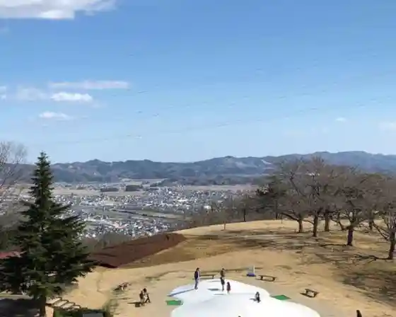
Sennan Comprehensive Pool & Training Center
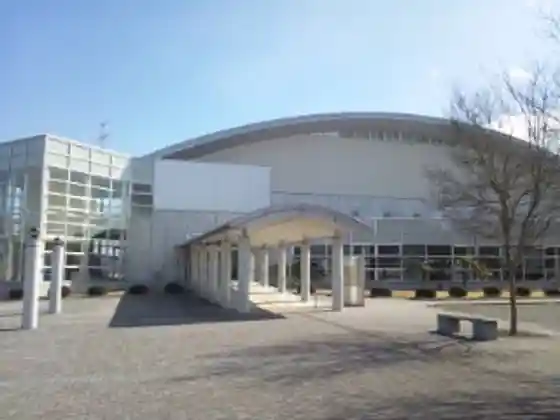
The Fir Tree Remained Observation Deck
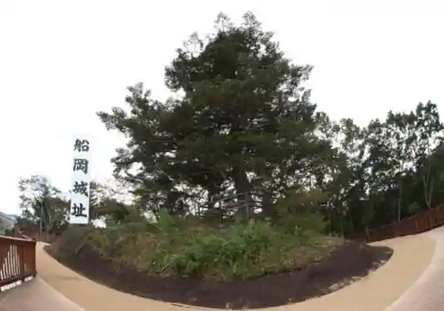
Shiratori Shrine
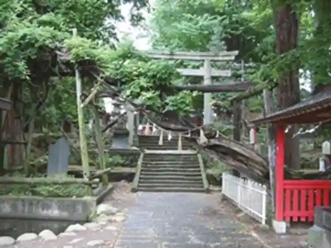
Funaoka Castle Ruins Park Cherry Blossoms
Funaoka Castle Ruins Park